Voor deze opdracht van Visual Design maakten wij 3 verschillende poster voor 3 verschillende concepten. We maakten eentje voor: Inscript, Kennis in zicht en een typographische quote.
Inscript is een online festival waar typografisch experiment en innovatie centraal staat. Bij hen staat design, experimenteren met taal en alles wat met typografie te maken centraal. Ik heb dit weergegeven door verschillende typografische elementen op een grid te plaatsen, maar dit grid niet te volgen. Hierdoor beeld ik het breken van de regels uit.
Kennis in zicht was een tentoonstelling om het 300 jarig bestaan van KU Leuven te vieren. De tentoonstelling over de universiteit vond plaats in het museum M Leuven. Dit ontwerp hiervoor is gebaseerd op het rariteitenkabinet. Deze kast heb ik uitgebeeld door verschillende voorwerpen voor en achter zichtbare grid te plaatsen. Hierdoor word het deels zien van de voorwerpen in de kast verbeeld. De kleuren zijn afgeleid uit het contrast van het moderne van M Leuven en de oudheid van de collectie.
Voor de typografische quote gingen we op zoek naar een quote uit een gekozen liedje. I koos voor ‘They say the loudest in the room is weak, that’s what they assume but I disagree’. Dit luide zag ik weerspiegeld in het luide van het brutalisme. Deze poster heb ik dan ook gebaseerd op een brutalistisch gebouw. De grouwe kleuren en de compositie heb ik weergegeven in dit ontwerp.
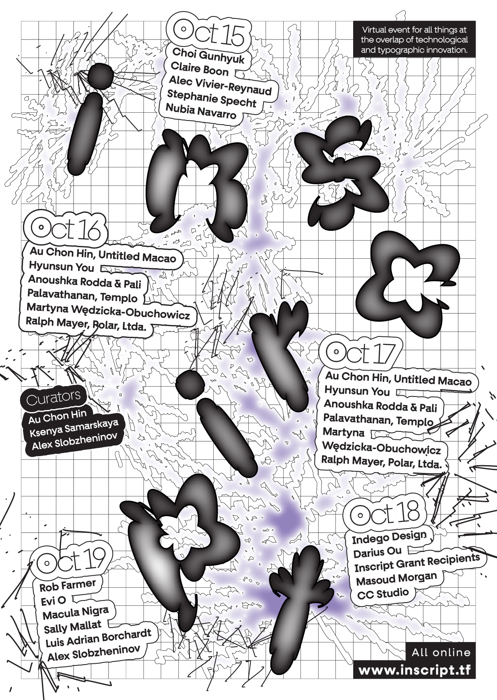
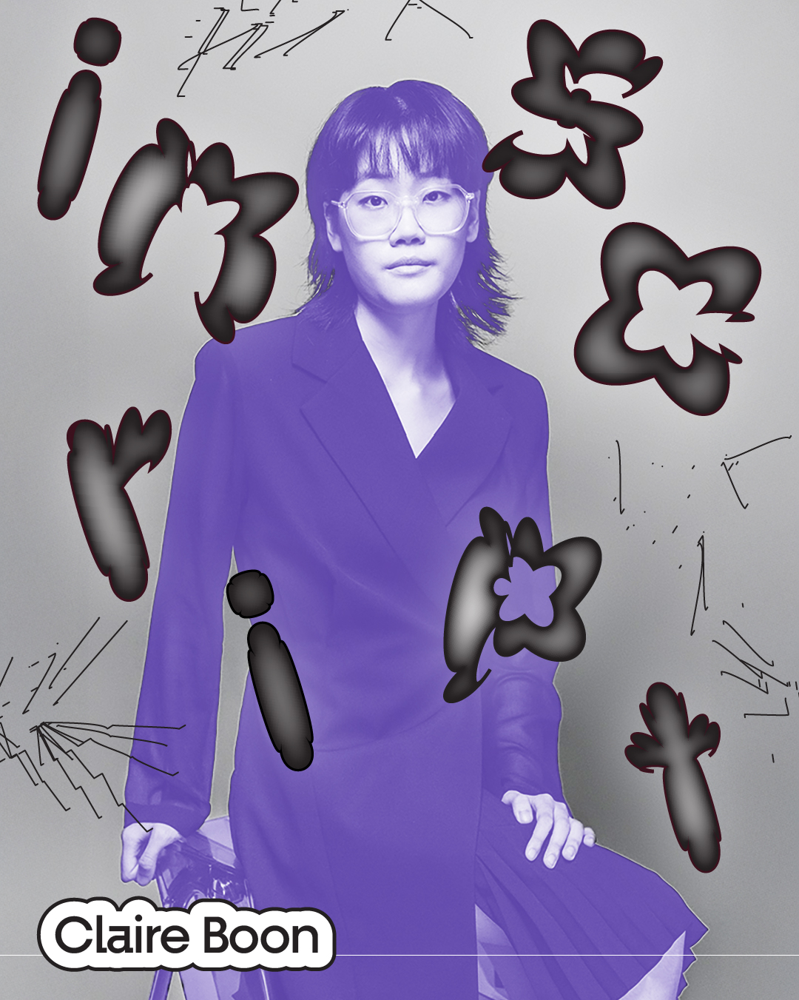
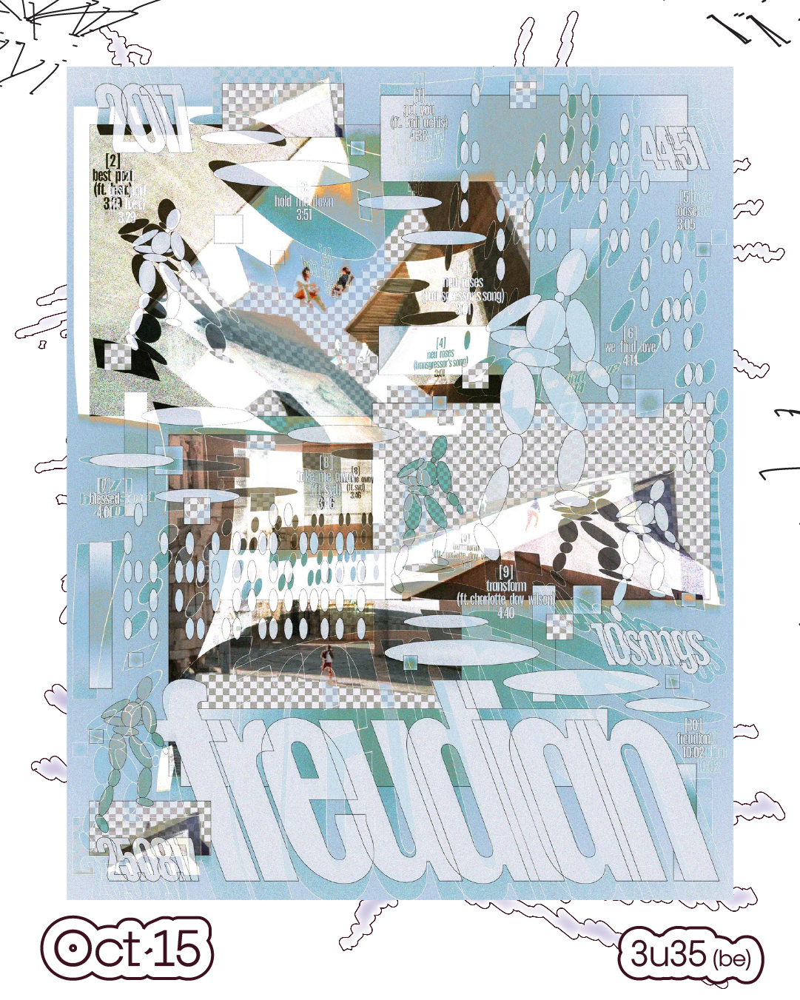
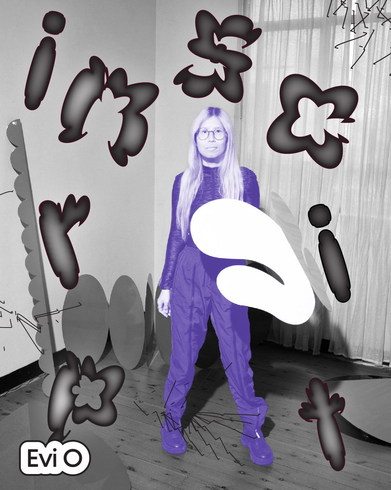
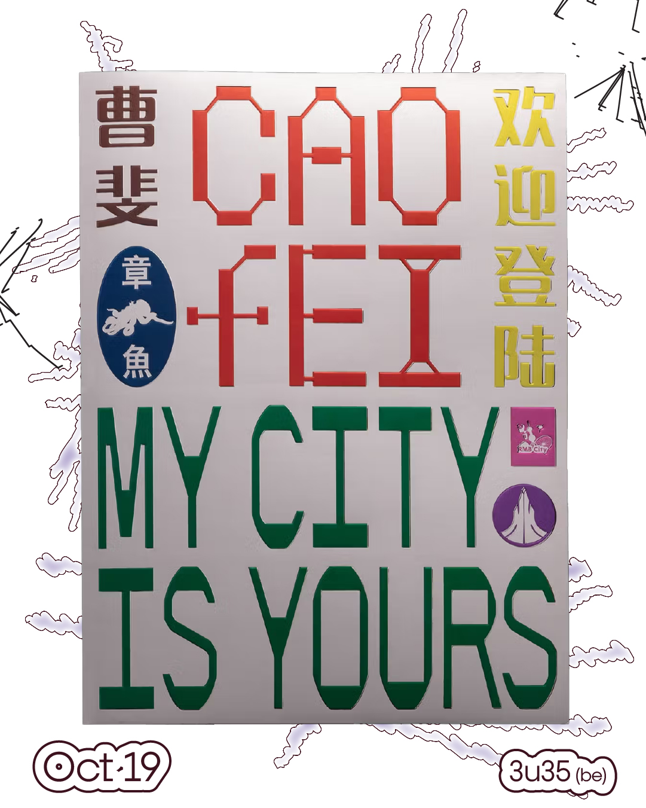
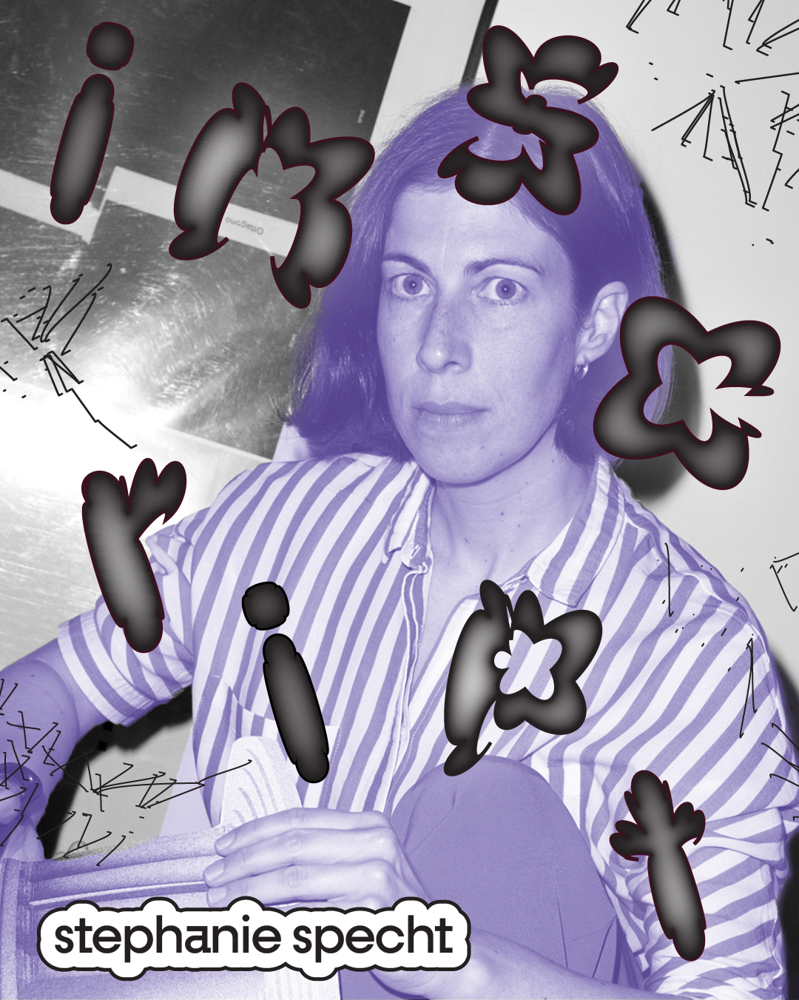
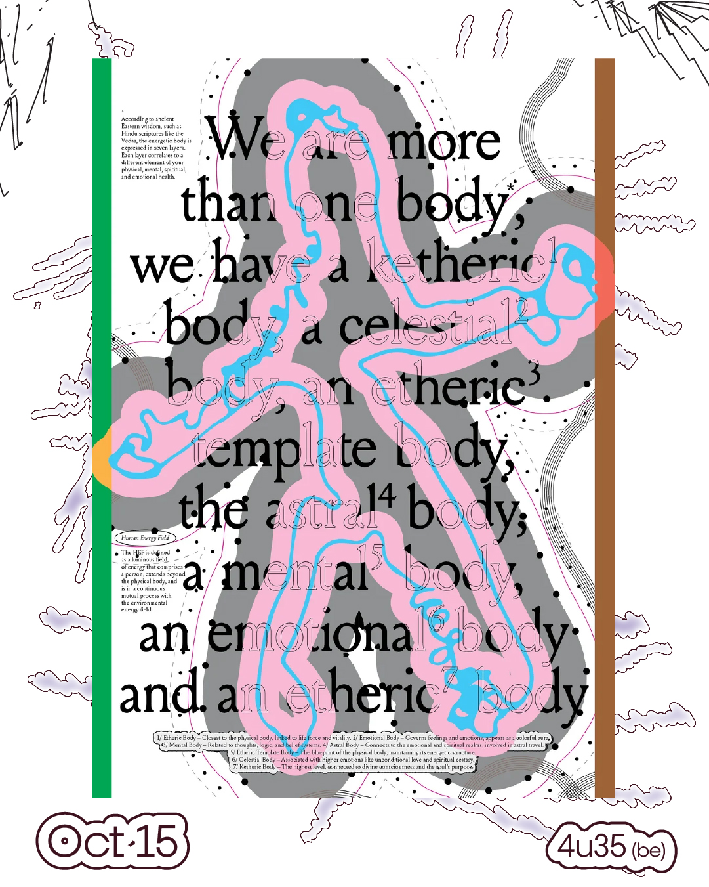
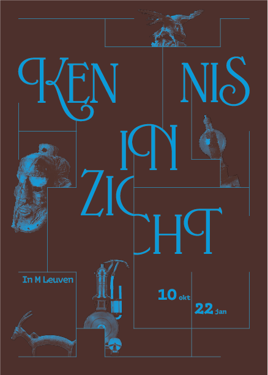
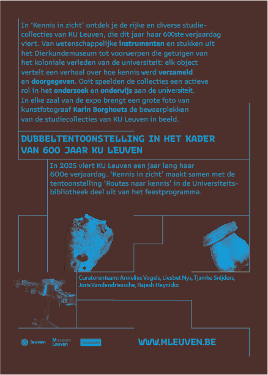
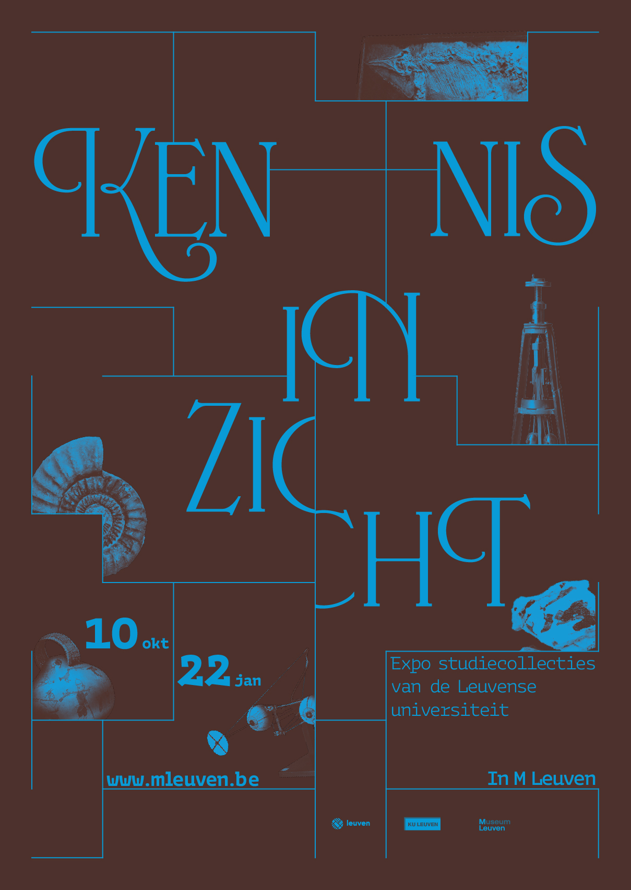
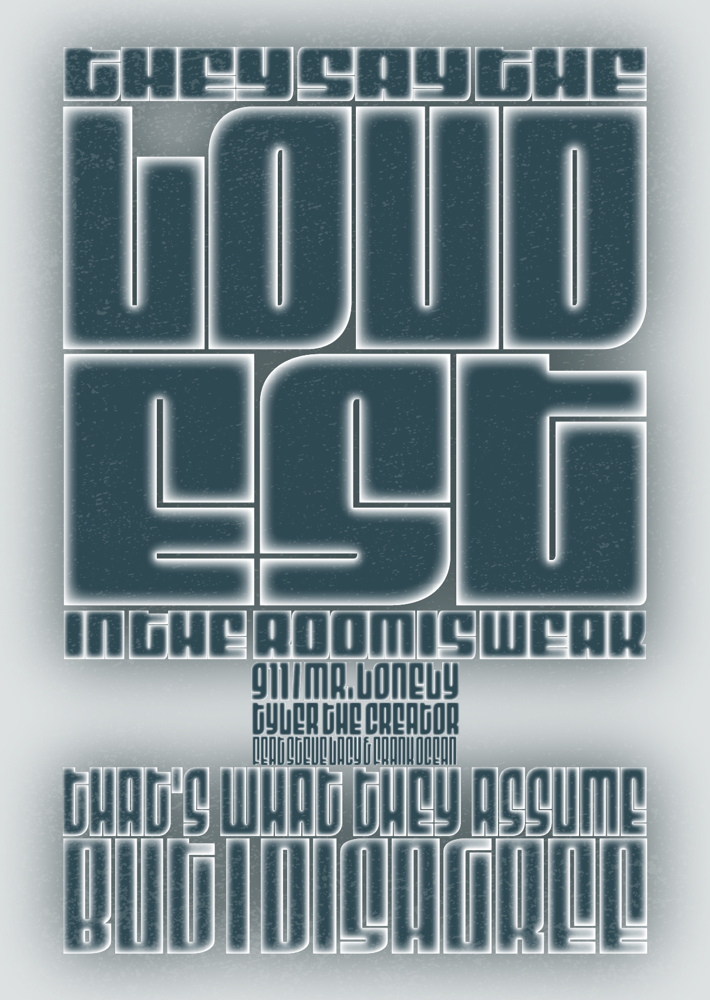
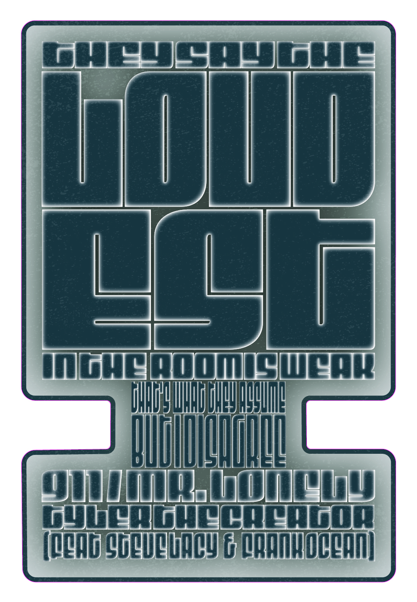